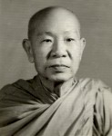

BuddhaSasana
Home Page
This document is written in Vietnamese, with Unicode
Times font
Thiền sư Hộ Pháp Dhammapala
Bình Anson
|
 N gài Thiền sư Hộ Pháp sanh năm 1901, tại Mỹ Tho, thế danh Trương Văn Huấn. Lúc bé học chữ Nho đến năm 10 tuổi. Sau đó, Ngài chuyển sang học chữ Pháp cho đến bậc Tú Tài. Năm 1924, Ngài sang Pháp học ngành sư phạm tại Đại học Toulouse, và đồng thời tốt nghiệp Cử nhân Khoa Học.Cuối năm 1928, Ngài trở về nước và dạy học tại các trường tư thục ở Sài Gòn như: Nguyễn Phan Long, Huỳnh Công Phát, Huỳnh Khương Ninh, Phan Bá Lân, Lê Bá Cang, Đồng Nai, v.v. Sau thế chiến thứ hai, Ngài được bổ nhiệm làm giám học kiêm Giáo sư Khoa Học trường trung học Petrus Trương Vĩnh Ký từ năm 1946 đến năm 1956. Năm 1957, Ngài được cử làm Tổng Thanh Tra Trung Học toàn quốc và dạy học tại trường Cao Đẳng và Đại Học Sư Phạm Sài Gòn cho đến năm 1965. Từ khi còn trẻ, Ngài thường dành nhiều thì giờ để tìm hiểu các tôn giáo, như Cao Đài giáo, Thông thiên học, Ky-tô giáo, Lão giáo, Phật giáo Bắc truyền. Do nhân duyên đưa đẩy, Ngài được một người bạn giới thiệu đến chùa Kỳ Viên, Quận 3, để nghe Pháp sư Thông Kham thuyết giảng vào mỗi ngày Chủ Nhật. Sau một thời gian tìm hiểu, Ngài xin quy y Tam Bảo trong truyền thống Phật giáo Nguyên thủy vào năm 1951. Từ đó, Ngài có nhiều đóng góp tích cực trong các hoạt động Phật sự, và là một trong những cư sĩ sáng lập viên của Tổng Hội Phật Giáo Nguyên Thủy Việt Nam, thành lập năm 1957. Ngài học các pháp thiền với nhiều vị thiền sư: niệm hơi thở với Hòa thượng Hộ Tông, thiền minh sát với ông Maurice Ghine - một thiền sư người Úc, thiền từ bi với Hòa thượng Narada, và quán niệm 32 thể trược với Hòa thượng Bửu Chơn. Tháng 7 năm 1969, Ngài từ giả gia đình, lên đường đi Thái Lan, tìm trường thiền để tu tập thêm. Đến Bangkok, Ngài được Tỳ khưu Kim Quang giới thiệu đến ngài Thiền sư Raja Siddhimuni tại chùa Mahadhatu. Sau đó, Ngài được gửi đến học thiền tại chùa Parinayok dưới sự hướng dẫn của Thiền sư Sangwan. Tại đó, Ngài được sắp xếp cho ở một cái cốc có đủ tiện nghi để hành thiền. Ngài ở đây tu tập hơn 4 tháng, phát triển được các tuệ căn bản của thiền Minh sát, rồi không tiến thêm được nữa. Thiền sư Sangwan khuyên Ngài đến gặp ngài Thiền sư Asabha ở thiền đường Vive As'rom, tỉnh Chonburi. Ngài Asabha là người Miến Điện và là đệ tử của Ngài Mahasi, do ngài Thiền sư Siddhimuni thỉnh sang Thái Lan để dạy thiền Minh sát. Tại đây, dưới sự hướng dẫn của Thiền sư Asabha, Ngài đạt được nhiều tiến bộ rất tốt đẹp, phát triển được các tầng tuệ cao hơn. Tháng 7 năm 1970, Ngài trở về Việt Nam. Sang tháng 8-1970, Ngài bắt đầu dạy hành thiền tại Phúc Tuệ Tịnh Môn do cụ Nguyễn Văn Hiểu thành lập. Thiền sinh đến tham dự càng ngày càng đông. Do đó, Ngài mở thêm 2 khóa thiền khác tại chùa Giác Quang (Bình Đông, Quận 8) và Thông Tuệ Tịnh Môn (Gò Vấp). Năm sau, ngày 25-7-1971, Ngài xuất gia với ngài Hòa thượng Narada tại chùa Phước Hải ở Vũng Tàu, Hòa thượng Bửu Chơn làm thầy tiếp dẫn. Ngài được Hòa thượng Narada đặt cho pháp danh là Hộ Pháp Dhammapala. Ngoài chùa Phước Hải, Ngài cũng có tu học và dạy hành thiền tại chùa Giác Quang. Ngài sang Hoa Kỳ năm 1980, tu tại chùa Pháp Vân, California, và chùa Quang Minh, Illinois. Năm 1987, Ngài an nhiên viên tịch, hưởng thọ 87 tuổi. -ooOoo- |
Last updated: 19-03-2005